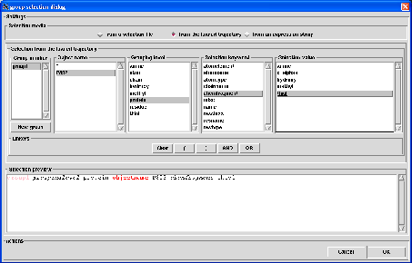
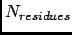

Next: selection from an expression
Up: Group selection
Previous: selection from a selection
Contents
To perform a group selection from the loaded trajectory, you have to click on the from the loaded trajectory
radiobutton. A dialog will be displayed in the underneath frame from which you will construct your selection directly from
the contents of the universe related to the loaded trajectory (see Fig. 4.32).
Figure 4.32:
The group selection dialog for a selection from the loaded trajectory.
|

|
To construct the selection, it is compulsory to proceed in the following order:
- create a new type of group by clicking on New group button or overwrite an existing one by selecting it in the Group number listbox,
- select an object name among the ones displayed in the Object name listbox. This will
display the grouping levels associated to the selected object in the Grouping level listbox and the selection
keywords associated to the selected object in the Selection keywords listbox,
- select a grouping level among the ones displayed in the Grouping level listbox. This is specific to group
selection as when selecting a group of atoms, you must specify at which level the selected atoms will be grouped. For example, if you perform a group selection on a protein. If you set the grouping
level to protein, then the group will be the whole protein. But, if you set the grouping level to residue, then
the group selection will results on a set of  group where is the number of residues of the
protein.
- select a selection keyword among the ones displayed in Selection keywords listbox. This will display in the
Selection value listbox the values associated to the selected keyword.
- unselect/select one or several values among the ones displayed in the Selection value listbox.
By doing so, you will construct a selection string with the following format:
group1 groupinglevel level objectname name keyword value1,value2, ...
where group1 is the name of the group, level is the selected grouping level, name is the selected object name (step 1), keyword is the selected keyword (step 2) and
value1,value2,... are the selected values (step 3). This constructed selection string is displayed in the Selection preview entry at the bottom of the dialog with highlighted keywords.
You can associate several selection keywords to a given selected object by repeating steps 2,3. In that case,
the constructed selection string will have the following format:
group1 groupinglevel level objectname name keyword1 value1,value2,...OR keyword2, value1,value2,value3...
where the keyword OR will be interpreted by nMOLDYN as an union operator in the sense that it will take the
union between the set of atoms generated by keyword1 value1,value2, keyword2 value1,value2,value3 ...
You can also include several objects in the selection by repeating steps 1,2,3. In that case, the constructed selection
string will have the following format:
group1 groupinglevel level objectname name1 keyword1 value1,...OR keyword2, value1,value2, ...OR objectname name2 keyword1 value1 ...
Finally, using the buttons within the Linkers frame each time a step 3 is completed allows to construct more complex selection strings using the
(, ), AND, OR linkers, the AND linker acting as an intersection operator while the
OR link, described above, acts as an union operator. The button Clear clears up the selection string under construction.
The table 4.1 lists the selection keywords and values depending on the MMTK type of the object being processed.
Here are some examples of group selection strings constructed from a protein whose name is P892 and whose number of residues
is 58:
- group1 groupinglevel residue objectname P892 atomelement carbon: will create 58 groups made of the carbon atoms of
each residue,
- group1 groupinglevel protein objectname P892 atomelement carbon,hydrogen: will create 1 group made of the carbon
and hydrogens of the whole protein,
- group1 groupinglevel amine objectname P892 atomelement nitrogen group2 groupinglevel hydroxy objectname P892 atomelement oxygen:
will create two families of groups. The first one contains groups made of the nitrogen atom of the each amine group of the protein.
The second one contains groups made of the oxygen atom of the each hydroxy group of the protein.
Next: selection from an expression
Up: Group selection
Previous: selection from a selection
Contents
pellegrini eric
2009-10-06